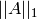
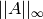
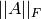
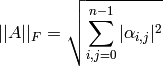
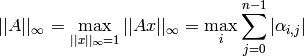
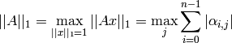
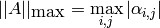

Norms¶
Several matrix norm routines are provided for general, Hermitian, and symmetric (distributed) matrices; each of the following routines can return either , ,  (the Frobenius norm), or the maximum entrywise norm. The matrix two-norm is quite expensive to directly compute, so a probabilistic algorithm (based upon Dixon’s approach) will be added in the near future.
- type NormType¶
An enum that can be set to either
FROBENIUS_NORM:

INFINITY_NORM:

ONE_NORM:

MAX_NORM:

Norm¶
For computing norms of fully-populated matrices.
- R advanced::Norm(const Matrix<R>& A, NormType type=FROBENIUS_NORM )¶
Return the norm of the fully-populated real matrix A.
- R advanced::Norm(const DistMatrix<R, MC, MR>& A, NormType type=FROBENIUS_NORM )¶
Return the norm of the fully-populated real distributed matrix A.
HermitianNorm¶
Same as advanced::Norm, but the (distributed) matrix is implicitly Hermitian with the data stored in the triangle specified by UpperOrLower.
SymmetricNorm¶
Same as advanced::Norm, but the (distributed) matrix is implicitly symmetric with the data stored in the triangle specified by UpperOrLower.